Enterprise Solutions Portfolio
10+ years connecting business needs to enterprise delivery
Enterprise solutions built from business need to production impact.
I turn complex product, process, data, and integration needs into clear requirements, governed solution designs, testable delivery plans, and release-ready outcomes.
Senior Business Analysis
Technical Product Management
Enterprise Systems & Integration
0
Years of enterprise delivery
0
Problems I have helped solve
0
Enterprise platforms and tools
Scroll to explore
Requirements to impact
Business Impact
Clear requirements. Governed delivery. Measurable outcomes.
Funnel to impact
Business Impact
Requirements become validated, release-ready outcomes.
Enterprise delivery toolkit
Platforms used to analyze, design, validate, and deliver.
A practical ecosystem spanning ERP, data analysis, APIs, collaboration, delivery management, documentation, and AI-assisted productivity.
SAP ERP
Product configuration · master data · ERP process analysis
SAP S/4HANA
Future-state ERP · process design · transformation readiness
Azure DevOps
Epics · features · stories · acceptance criteria · delivery tracking
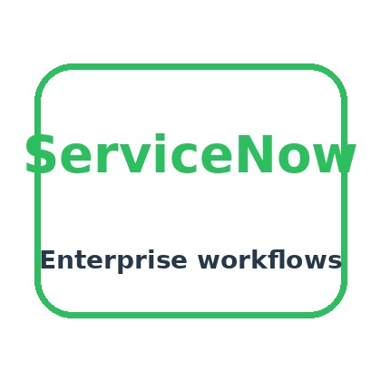
ServiceNow
Enterprise workflow · service processes · operational controls
Jira
Agile delivery · dependency tracking · defect visibility
SharePoint
Controlled documentation · approvals · collaboration
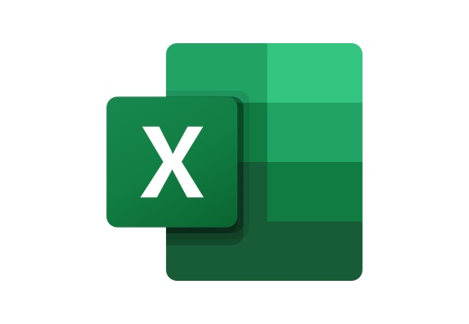
Excel
Data analysis · validation · reconciliation · reporting
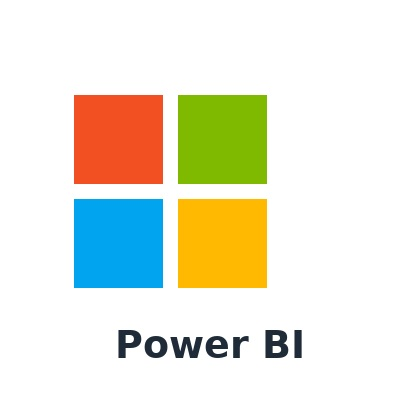
Power BI
Dashboards · operational insight · decision support
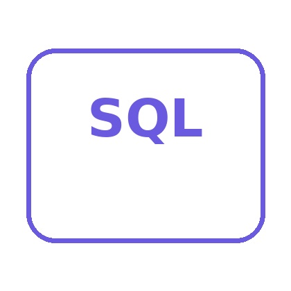
SQL
Queries · reconciliation · validation · data quality
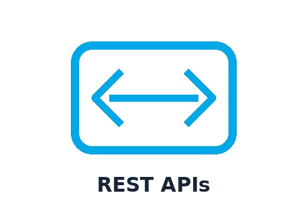
REST APIs
Interface requirements · payloads · errors · integration controls
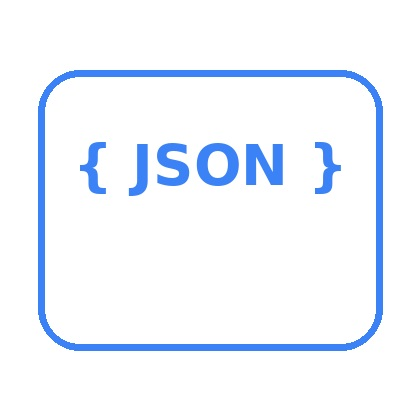
JSON
Payload mapping · field validation · transformation logic
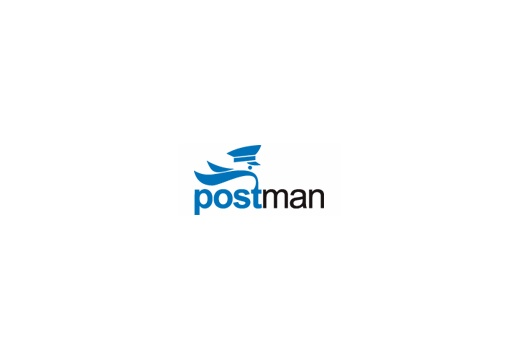
Postman
API testing · evidence · error analysis · troubleshooting
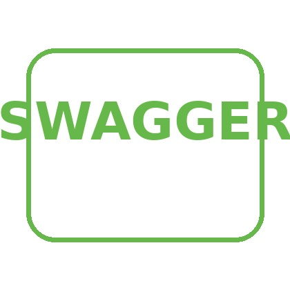
Swagger
API specifications · contracts · documentation
GitHub
Source control · versioning · portfolio delivery
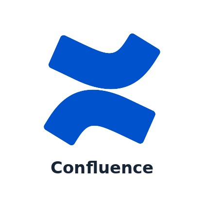
Confluence
Requirements · decisions · knowledge management
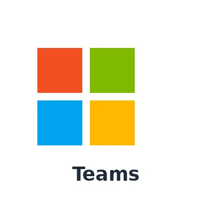
Microsoft Teams
Workshops · stakeholder alignment · delivery coordination
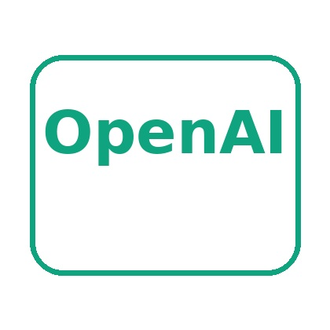
ChatGPT
Analysis support · prototyping · structured drafting
Claude
Research · review · documentation and code support
Gemini
Multimodal research · analysis · productivity support
Selected enterprise work
Problems I have helped solve
Representative, sanitized case studies showing how I move from business problem to implemented solution and measurable operational value.
Enterprise Product Configuration
01Business need
02Rules
03Catalog
04Validation
Business outcomeGoverned product rules, stronger validation, and more consistent configuration output.
View case study →
Enterprise Data Integration
01Source
02Transform
03Interface
04Target
Business outcomeClear mappings, validation controls, and traceable data movement across enterprise systems.
View case study →
Requirements-to-Release Delivery
01Need
02Backlog
03Build
04Release
Business outcomeConnected business decisions, backlog items, test evidence, and release readiness.
View case study →
Business Reporting Automation
01Extract
02Validate
03Transform
04Report
Business outcomeLess manual reporting effort with repeatable extraction, validation, and output controls.
View case study →
Technical Issue & Root-Cause Analysis
01Observe
02Evidence
03Cause
04Resolve
Business outcomeFaster issue isolation through structured evidence, root-cause analysis, and decision ownership.
View case study →
Enterprise Data Migration
01Assess
02Map
03Load
04Reconcile
Business outcomeControlled migration through source assessment, mapping, validation, reconciliation, and sign-off.
View case study →
How I work
Clear thinking, structured delivery, and visible outcomes.
My approach combines discovery, analysis, functional design, stakeholder alignment, validation, and release readiness—without losing traceability between the original need and the delivered result.
Clarify the real business need
Facilitate workshops, surface assumptions, define outcomes, and identify the decisions that shape scope.
Turn complexity into structured logic
Model processes, rules, data, exceptions, dependencies, interfaces, and measurable acceptance conditions.
Connect requirements to implementation
Build traceable backlogs, align cross-functional teams, support design decisions, and resolve delivery ambiguity.
Protect release readiness
Support testing, defect triage, stakeholder sign-off, operational handoff, and post-release stabilization.
Career focus
Senior business analysis with technical delivery depth.
I bring more than a decade of experience working across enterprise applications, product configuration, ERP processes, integrations, data, reporting, requirements, testing, and release delivery.
Open to the right opportunity
Looking for a senior analyst who can bridge business and technology?
I bring enterprise systems experience, structured analysis, technical delivery fluency, and a practical focus on outcomes.